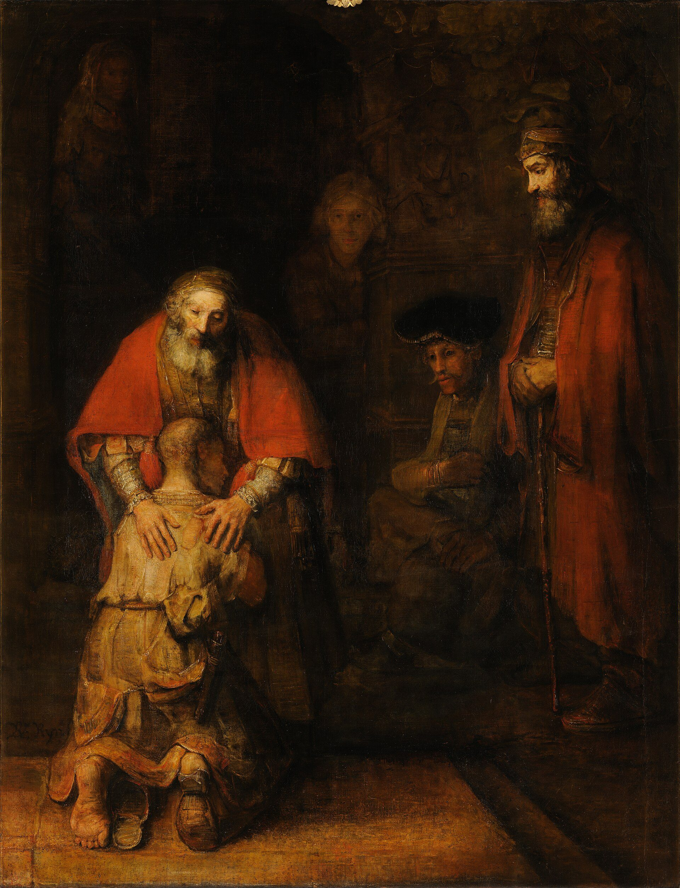

raise your vibration
波動を上げる
「波動が低い」と言われた。落ち込んでいる自分は、波動が低いのだろうか。悲しんではいけないのか。この分野で名前の知られた人は、「高い波動＝よい感情」という考えを「この分野でいちばん壊すべき思い違い」と呼び、五つの手順を挙げています。日本語で「波動」がこの意味で広まった経緯と、心理学が「感情を押し殺すこと」について調べてきたことも。

「あなたは波動が低い」と言われた。落ち込んでいるとき、悲しんでいるとき、それは波動が下がっているということなのか。だとしたら、悲しんではいけないのか。無理にでも明るくしていなければ、よいものは来ないのか。
「波動を上げる」は、この分野で、引き寄せとともによく語られる言葉です。このページでは、この分野で名前の知られた人が「波動」を何だと説明し、何を「思い違い」と呼び、何をすればよいと言っているかを見ます。そのあとで、日本語で「波動」という言葉がこの意味で広まった経緯と、「感情を押し殺すこと」について心理学が調べてきたことを、隣に置きます。
波動とは、何だと言われているのか
この分野の教師、クリスティーナ・ロペス（理学療法の博士号と公衆衛生の修士号を持つ元臨床家）は、こう説明しています。
「それはひとつのものではありません。何兆もの細胞、それぞれの臓器、チャクラ、オーラの層、心、頭——それぞれが固有の振動を持っていて、その総和があなたの全体の波動です」
なぜ、それが大事なのか。「魂は、あなたの非物質の部分で、とても高い波動を持っています。波動が高いほど、魂の自然な振動に近づく。だから自然に満たされ、つながっていると感じ、導きを受け取りやすくなる。低いほど魂から離れ、幸せを感じにくく、ここにいたくないと感じ、幻想が育つ」
この分野でいちばん壊すべき思い違い、と
ロペスは、五つの手順に入る前に、ひとつの考え方を「絶対に真実ではない」「この分野で足を切り落とさなければならない神話」と呼んで、時間をかけて否定しています。読みに来た人の多くが、まさにこの思い違いのために来ているからだと思います。
「高い波動にいるときは、喜びと幸福と恍惚だけを感じていて、怒りや悲しみや嘆きのような『低い』感情は感じない——この考え方は、とくに西洋のこの分野に、とても広く行きわたっています。そして、まったく真実ではありません」
「あなたが尊敬する、目覚めた師を思い浮かべてください。ダライ・ラマでも、アンマでも、ラム・ダスでも。その人が、大切な人を失ったとしましょう。どう感じるでしょうか。人間である以上、悲しみと喪失を感じます。では、百万ドルの問いです。その師が悲しんだから、その師の波動は下がるでしょうか。ありえません。ありえません。彼らはとても高い波動で振動しながら、人間のすべての感情を感じているのです」
「そもそも、『ネガティブな感情』も『ポジティブな感情』も、ありません。あるのは、軽い感情と、重い感情です。どれも、ただ、体のなかを動くエネルギーです」
そして、なぜこの思い違いが「破壊的」なのかを、ロペスはこう説明します。
「悲しんでいる人に、ほかの『目覚めた』人が『あなたの波動は高くないね』と言う。それで、その人はまた自分の悲しみを押し込める。この分野の集まりで、実際に起きていることです」
何をすればよいと言われているのか
ロペスは五つの手順を、「今回は順番が大事」と言って挙げています。たとえは、気球です。「最初の三つで砂袋を捨てる。軽くなってから、四つ目と五つ目で上がる」。
「不快な感情と一緒にいられるようになること。受け入れなければ、逃げ、拒み、押し込め、素通りする。その瞬間に波動は下がる。悲しみのバケツを抱えているなら、悲しみを、喜びと同じように敬う。認めた感情は、循環を許される。循環すれば、遅かれ早かれ、去っていく」
ロペスはここで、13世紀のスーフィーの詩人ルーミーの「客人の家」という詩を読み上げています。人間であることは客人の家のようなもので、毎朝、喜びも、落ち込みも、意地の悪さも、新しい客として訪ねてくる。悲しみの群れが家じゅうの家具を運び出しても、どの客も敬意をもって迎えなさい——新しい喜びのために、家を空けてくれているのかもしれないのだから。暗い考えも、恥も、悪意も、戸口で笑って迎え入れなさい。どれも、向こうから遣わされた案内人なのだから、と。
3．影（シャドウ）に取り組む — 「影とは、自分のなかの、見ていない、認めていない、受け入れていない部分のことです。悪いものではありません。誰にでもあり、受け入れていない部分が多いほど大きい。影に取り組むとは、愛していなかった自分の一部に、愛を持っていくこと。それだけです」（影のページに、くわしく書きました）
「多くの本や動画は、ここから始めます。でも、砂袋を捨てる前にどれだけ高い感情を育てても、重りは持ち上がらない。だから四番目です」
ロペスによれば、これは心（ハート）の作業です。「心は、体のなかでいちばん強い電磁場を出している。頭より、電気的に60倍、磁気的に100倍強い、と言われています。だから、慈しみ、喜び、感謝、愛——心の感情を育てることは、波動のいちばん大きな源に触れることです」
そのための二つの練習。
・トンレン — チベット仏教の、尼僧ペマ・チョドロンから学んだという練習。「座って、誰かの痛み——けんかした相手、自分を傷つけた人、あるいは世界の痛み——を吸い込み、癒しと愛を吐き出す。西洋では正反対のことをする。痛みを押しのけて、喜びだけを育てようとする。この練習では、痛みを取り込む。怖いなら、言っておきます。世界の痛みを吸い込んでも、死にません。心はそれほど強い」
・感謝 — 「毎晩、眠る前に、暗闇で目を閉じて、その日に感謝していることを声に出して言う。10でも20でもいい」
そのために、瞑想（「蓮華座で座る形でなくていい。いろいろな形がある」）と、向け直し（「終末や欠乏の考えの輪に入っていくのに気づいたら、もっと広がりのあるものに注意を向け直す」）。
五つを並べると、ロペスの言っていることは、ひとつに集約されます。波動を上げるとは、明るくふるまうことではなく、重いものを先に片づけることだ。「よい感情を選ぶ」のは、その最後です。
日本語で「波動」が、この意味になった経緯
「波動」は、もともと物理学の言葉です。それが「その人のエネルギーの質」という意味で日本語に広まったのには、はっきりした経緯があります。
1989年、横浜の経営者江本勝（1943〜2014年）が、アメリカで開発された分析装置の日本での独占販売権を得て、これを「波動測定器」と呼び、「波動」に関する事業を始めました。1992年以降、『波動時代への序幕』『波動の人間学』『波動の真理』など、「波動」を冠した本を次々に出しています。
1999年の『水からの伝言』は、「ありがとう」の文字を見せた水は美しい結晶を作り、「ばかやろう」を見せた水はいびつな結晶を作る、という写真集です。自費出版でしたが支持者の手で広まり、45か国語に訳され、シリーズで250万部以上。アメリカではニューヨーク・タイムズのベストセラーになりました。小学校の道徳の授業にも使われています。
江本の理論では、人間の意識から「愛の波動」や「ネガティブな感情の波動」が発せられる、とされます。いま日本語で「波動が高い／低い」と言うときの「波動」は、物理学の言葉ではなく、この江本の言葉です。
江本は2005年のインタビューで、この本について「ポエムだと思う」「科学だとは思っていない」「僕は科学者ではない」と語っています。2007年のブログでも、自分たちの研究は「アート、あるいはファンタジーのレベル」だと書いています。
写真に写っている結晶については、雪や霜と同じ「気相成長」でできる雪花状の氷で、その形は中谷宇吉郎が研究した雪の結晶の成長条件——温度と水蒸気の量——で決まる、と説明されています。掲載されているのは、シャーレごとに違う結晶のなかから選んだ一枚です。江本自身、複数の写真から「その水の性質をもっともよく表していると思われる結晶」を選んでいることを認めています。
これは、ロペスの話とは別のものです。ロペスは「水の結晶」の話をしていません。ただ、日本語で「波動」と検索してこのページに来た人は、この二つの流れ——アメリカの「バイブレーション」と、日本の「波動」——が、同じ言葉で呼ばれていることを、知っておいてよいと思います。前者は「自分のエネルギーの状態」の話で、後者は「言葉が水に影響する」という話です。
心理学の側では
ロペスが「思い違い」と呼んだものについて、この分野の外に、二つの名前があります。
1984年、仏教の教師で心理療法家のジョン・ウェルウッドが作った言葉で、「未解決の感情の問題、心の傷、やり残した発達の課題に向き合うのを避けるために、スピリチュアルな考えや実践を使う傾向」と定義されています。ロペスが「バイパス（素通り）」と呼んでいるのは、この言葉です。
臨床の側は、これを一時的な対処として使うことは必ずしも不健康ではない、としています。ただ、長期の戦略として使い続けると、「他人と自分を過剰に支配したがること、恥、不安、白か黒かの思考、感情の混乱、不適切なふるまいへの過剰な寛容、共依存、強迫的な親切、カリスマ的な教師への盲目的な忠誠、自己責任の放棄」が起きうる、と。
心理学には、感情を顔に出さないようにすることを「表出抑制」と呼んで調べてきた研究があります。1993年のグロスとレヴェンソンの実験では、不快な映像を見ながら表情を抑えた人は、まばたきが増え、心拍は下がりましたが、不快の経験そのものは減っていませんでした。「自然な感情の表出を抑えることが、感情の経験と生理的な興奮を減らすという証拠はほとんどない」とまとめられています。
つまり、明るい顔をしても、悲しみは減らない。ロペスの「押し込めた感情は淀む」という言い方と、この実験は、同じ方向を向いています。
近いことを言っているもの
- 引き寄せ — 「波動を上げる」が、いちばんよく語られる文脈。別のページで扱っています
- 影（シャドウ） — ロペスの三つ目。別のページで扱っています
- 魂の暗夜 — 「重い感情の時期も、目覚めの一部」という考え方。別のページで扱っています
- スピリチュアル・バイパス — 上に書いた、心理学の側の名前です
- アセンション — ロペスが「光の指数」と呼んでいるものと、ここで「波動」と呼んでいるものは、同じ方向を指しています。別のページで扱っています
出典・参考
- Christina Lopes, How To RAISE YOUR VIBRATION In 5 Powerful Steps! [Effectively]（YouTube）波動の定義、「高い波動＝よい感情」という思い違い、五つの手順、ルーミーの詩、トンレン。引用は字幕による
- 江本勝（日本語版ウィキペディア）日本語で「波動」がこの意味で広まった経緯（1989年の波動測定器、1999年『水からの伝言』）
- 水からの伝言（日本語版ウィキペディア）本の内容、著者自身の「ポエムであって科学ではない」という言葉、結晶についての説明
- Spiritual bypass（英語版ウィキペディア）「スピリチュアル・バイパス」（ウェルウッド、1984）の定義と、長く続けたときの影響
- Expressive suppression（英語版ウィキペディア）感情の表出を抑えることについての研究（グロスとレヴェンソン、1993）
関連することば
 ascension / 5Dアセンションと5次元「アセンション症状」と検索した。骨まで疲れている。動悸がする。友人が急にいなくなった。理由の分からない悲しみがある。この分野で名前の知られた人は、それを何だと説明し、何をすればよいと言っているのか。「地球が5次元へ移る」という話はどこから来たのか。そして、同じ経験に精神医学がつけている名前。
ascension / 5Dアセンションと5次元「アセンション症状」と検索した。骨まで疲れている。動悸がする。友人が急にいなくなった。理由の分からない悲しみがある。この分野で名前の知られた人は、それを何だと説明し、何をすればよいと言っているのか。「地球が5次元へ移る」という話はどこから来たのか。そして、同じ経験に精神医学がつけている名前。 ascendant / rising signアセンダント（上昇宮）自分の星座の説明が、どうも自分に合わない。初対面の人から見た自分と、自分で思う自分が違う。占星術がそこに与えている名前が、アセンダント。太陽・月とあわせて「ビッグスリー」と呼ばれる3つ目。出生時刻が要る理由も。
ascendant / rising signアセンダント（上昇宮）自分の星座の説明が、どうも自分に合わない。初対面の人から見た自分と、自分で思う自分が違う。占星術がそこに与えている名前が、アセンダント。太陽・月とあわせて「ビッグスリー」と呼ばれる3つ目。出生時刻が要る理由も。 inner childインナーチャイルド恋愛になると、急に子どもに戻ってしまう。人が離れていくのが怖い。安心できたことがない。自分のなかの「子ども」が傷ついているのか、どう確かめ、どう向き合えばよいと言われているか。
inner childインナーチャイルド恋愛になると、急に子どもに戻ってしまう。人が離れていくのが怖い。安心できたことがない。自分のなかの「子ども」が傷ついているのか、どう確かめ、どう向き合えばよいと言われているか。
receiving blocks受け取れないほめられると、否定してしまう。贈り物を、素直に受け取れない。願っているはずのものが、いざ来そうになると、なぜか自分で遠ざけてしまう。この分野で名前の知られた人は、その仕組みを「鎧」という言葉で説明し、六つの方法を挙げています。そのなかで彼女が使っている「タッピング」について、研究の側が言っていることも。 angel numbersエンジェルナンバー時計を見ると11:11。車のナンバーが444。同じ数字ばかり目に入る。これは何かの合図なのか。何をすればいいのか。そして、この考え方を作った本人が、後年それを離れたという事実について。
angel numbersエンジェルナンバー時計を見ると11:11。車のナンバーが444。同じ数字ばかり目に入る。これは何かの合図なのか。何をすればいいのか。そして、この考え方を作った本人が、後年それを離れたという事実について。 empathエンパス人混みで消耗する。相手の不機嫌が自分に移る。断れない。ひとりでいたい。自分は弱いのだろうか。それぞれの悩みに、この分野で名前の知られた人たちが何と言っているか。
empathエンパス人混みで消耗する。相手の不機嫌が自分に移る。断れない。ひとりでいたい。自分は弱いのだろうか。それぞれの悩みに、この分野で名前の知られた人たちが何と言っているか。